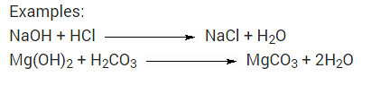
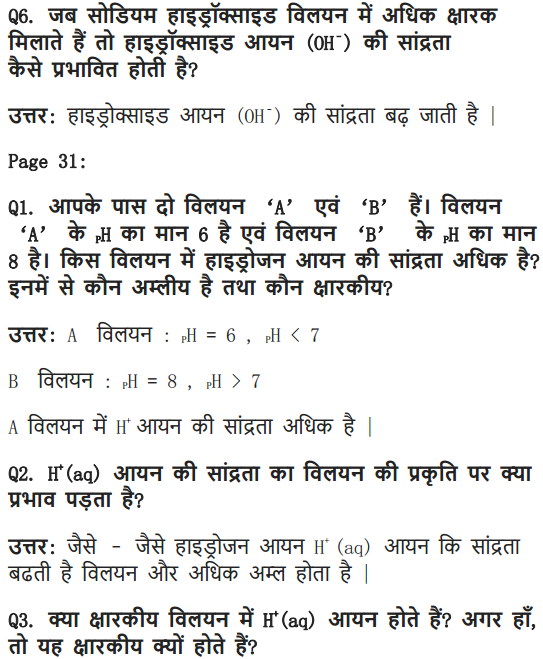
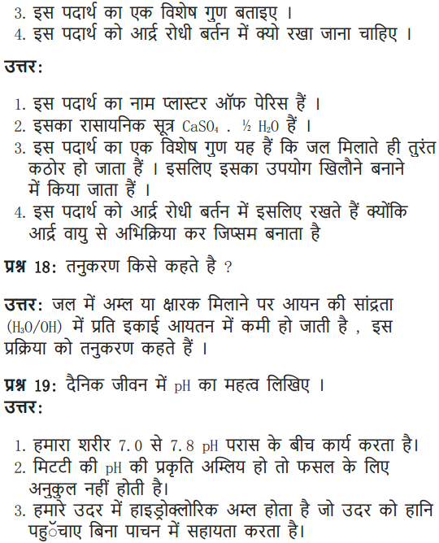

NCERT Solutions For Class 10 Science Chapter 2 Acids And Bases: In this article, we will provide you with NCERT Solutions For Class 10 Science Chapter 2 Acids And Bases. Having proper knowledge of the theories, sufficient practice of the reactions, equations and formulas, and solving questions from the NCERT Chemistry books are very important if you want to score well in Science for Class 10 board exams as well as JEE and NEET. Going through the step-wise solutions for every question too is highly important to bag a good score.
NCERT Solutions For Class 10 Science Chapter 2 Notes for Acids And Bases has been provided by India’s topmost Chemistry teachers. Also in this article, you will find the Step-wise explanation for each and every question. Going through them will help you in getting a better understanding of how to solve problems. Read on to find out NCERT Solutions for Class 10 Science Chapter 2 Exercise and Extra Questions.
NCERT Solutions for Class 10 Science Chapter 2 Acids and Bases
Before getting into the details of NCERT Solutions For Class 10 Science Chapter 2 Acids And Bases, let’s have an overview of topics & subtopics under NCERT Solutions for Class 10 Science Chapter 2 Activities:
- Acids, Bases And Salts
- Understanding The Chemical Properties Of Acids And Bases
- What Do All Acids And All Bases Have In Common?
- How Strong Are Acid Or Base Solutions?
- More About Salts
Free download NCERT Solutions for Class 10 Science Chapter 2 Acids And Bases PDF in Hindi Medium as well as in English Medium for CBSE, Uttarakhand, Bihar, MP Board, Gujarat Board, and UP Board students, who are using NCERT Books based on updated CBSE Syllabus for the session 2019-20.
- NCERT Solutions for Class 10 Science Chapter 2 Intext Questions
- Class 10 Chapter 2 Acids, Bases and Salts Chapter End Questions
- Class 10 Chapter 2 Acids, Bases and Salts MCQ (Multiple Choice Questions)
- अम्ल, क्षार एवं लवण कक्षा 10 विज्ञान हिंदी में
- Class 10 Acids Bases and Salts Important Questions
- Acids Bases and Salts Class 10 Notes
- Acids Bases and Salts NCERT Exemplar Solutions
- Acids, Bases and Salts Class 10 Extra Questions
NCERT Solutions for Class 10 Science Chapter 2 Intext Questions
Question 1
You have been provided with three test tubes. One of them contains distilled water and the other two contain an acidic solution and a basic solution, respectively. If you are given only red litmus paper, how will you identify the contents of each test tube ?
Answer:
(i) Put the red litmus paper in all the test tubes, turn by turn. The solution which turns red litmus to blue will be a basic solution. The blue litmus paper formed here can now be used to test the acidic solution.
(ii) Put the blue litmus paper obtained above in the remaining two test-tubes, turn-by-turn. The solution which turns the blue litmus paper to red will be the acidic solution.
(iii) The solution which has no effect on any litmus paper will be neutral and hence it will be distilled water.
Question 1
Why should curd and sour substances not be kept in brass and copper vessels ?
Answer:
Curd and sour substances should not be kept in brass and copper vessels because these and other sour food-stuffs contain acids which can react with the metal of the vessel to form poisonous metal compounds which can cause food poisoning and affect our health adversely.
Question 2
Which gas is usually liberated when an acid reacts with a metal ? Illustrate with an example. How will you test for the presence of this gas ?
Answer:
(i) Hydrogen (H2) gas is liberated when an acid reacts with a metal.
(ii) Illustration : Set up the apparatus as shown in the given figure. Take some zinc granules in the test tube. Add about 5 mL dilute hydrochloric acid slowly. Soon the reaction between zinc and hydrochloric acid starts and hydrogen gas is evolved.
(iii) Test for H2 gas :
H2 gas is not soluble in water. When passed through soap solution, it gets trapped into bubbles.
Bring a burning candle near the soap bubble filled with gas. The soap bubble bursts and hydrogen gas burns with a pop sound.
Question 3
Metal compound A reacts with dilute hydrochloric acid to produce effervescence. The gas evolved extinguishes a burning candle. Write a balanced chemical equation for the reaction if one of the compounds formed is calcium chloride.
Answer:
As the end product is calcium chloride and the gas formed is carbon dioxide, the metal compound A must be calcium carbonate. Therefore, the reaction between calcium carbonate and hydrochloric acid is

Question 1
Why do HCl, HNO3, etc show acidic characters in aqueous solutions while solutions of compounds like alcohol and glucose do not show acidic character ?
Answer:
H+ ions in aqueous solution are responsible for acidic character. HCl, HNO3, etc. give H+ ions in water while alcohol and glucose do not give H+ ion in water. Therefore, alcohol and glucose do not show acidic character.
Question 2
Why does an aqueous solution of an acid conduct electricity ?
Answer:
The aqueous solution of an acid conducts electricity due to the presence of charged particles called ions in it.
Question 3
Why does dry HCl gas not change the colour of the dry litmus paper ?
Answer:
Dry HCl gas does not give H+ ions and therefore does not change the colour of dry litmus paper.
Question 4
While diluting an acid, why is it recommended that the acid should be added to water and not water to the acid ?
Answer:
While diluting an acid it is recommended that the acid should be added to water and not water to the acid because if water is added to concentrated acid to dilute it, then a large amount of heat is evolved at once. This heat changes some of the water to steam explosively which can splash the acid on one’s face or clothes and cause acid burns.
Question 5
How is the concentration of hydronium ions (H3O+) affected when a solution of an acid is diluted ?
Answer:
When a given amount of an acid is added to water, there is a fixed number of hydronium ions per volume of the solution. On dilution, the number of hydronium ions per volume decreases and concentration decreases.
Question 6
How is the concentration of hydroxide ions (OH–) affected when excess base is dissolved in a solution of sodium hydroxide ?
Answer:
The concentration of hydroxide ions will increase when excess base is dissolved in a solution of sodium hydroxide, but it happens to a limited extent only after which the concentration becomes almost constant.
Question 1
You have two solutions A and B. The pH of solution A is 6 and pH of solution B is 8. Which solution has more hydrogen ion concentration? Which of this is acidic and which one is basic ?
Answer:
A pH value of less than 7 indicates an acidic solution, while greater than 7 indicates a basic solution. Since solution A has more hydrogen ion concentration, solution A is acidic and solution B is basic.
Question 2
What effect does the concentration of H+ (aq) ions have on the nature of the solution ?
Answer:
More the concentration of H+ ions, higher the acidic nature of the solution.
Question 3
Do basic solutions also have H+ (aq) ions ? If yes, then why are these basic ?
Answer:
Basic solutions have H+ (aq) ions. But these are far less in number than OH– ions that is responsible for their basic nature.
Question 4
Under what soil condition do you think a farmer would treat the soil of his fields with quick lime (calcium oxide) or slaked lime (calcium hydroxide) or chalk (calcium carbonate) ?
Answer:
If the soil is too acidic (having low pH) then it is treated with materials like quick lime (calcium oxide) or slaked lime (calcium hydroxide) or chalk (calcium carbonate).
Question 1
What is the common name of the compound CaOCl2 ?
Answer:
Bleaching powder.
Question 2
Name the substance which on treatment with chlorine yields bleaching powder.
Answer:
Slaked lime Ca (OH)2.
Question 3
Name the sodium compound which is used for softening hard water.
Answer:
Sodium carbonate.
Question 4
What will happen if a solution of sodium hydrogen carbonate is heated. Give the equation of the reaction involved ?
Answer:
Solution of sodium hydrogen carbonate on heating gives sodium carbonate and carbon dioxide gas is evolved.
Question 5
Write an equation to show the reaction between plaster of Paris and water.
Answer:
NCERT Solutions for Class 10 Science Chapter 2 Textbook Chapter End Questions
Question 1
A solution turns red litmus blue, its pH is likely to be
(a) 1
(b) 4
(c) 5
(d) 10
Answer:
(d) 10
Question 2
A solution reacts with crushed-egg shells to give a gas that turns lime water milky. The solution contains
(a) NaCl
(b) HCl
(c) LiCl
(d) KCl
Answer:
(b) HCl
Question 3
10 mL of a solution of NaOH is found to be completely neutralised by 8 mL of a given solution of HC1. If we take 20 mL of the same solution of NaOH, the amount of HC1 solution (the same solution as before) required to neutralise it will be
(a) 4 mL
(b) 8 mL
(c) 12 mL
(d) 16 mL
Answer:
(d) 16 mL
Question 4
Which one of the following types of medicines is used for treating indigestion?
(a) Antibiotic
(b) Analgesic
(c) Antacid
(d) Antiseptic
Answer:
(c) Antacid
Question 5
Write word equations and then balanced equations for the reaction taking place when
(a) dilute sulphuric acid reacts with zinc granules
(b) dilute hydrochloric acid reacts with magnesium ribbon
(c) dilute sulphuric acid reacts with aluminium powder
(d) dilute hydrochloric acid reacts with iron filing
Answer:
(a) Zinc + dilute sulphuric acid → Zinc sulphate + Hydrogen
Zn (s) + H2SO4 (aq) → ZnSO4 (aq) + H2 (g)
(b) Magnesium ribbon + dil. Hydrochloric acid → Magnesium chloride + Hydrogen
Mg (s) + 2 HCl (aq) → MgCl2 (aq) + H2 (g)
(c) Aluminium powder + dil. Sulphuric acid > Aluminium sulphate + Hydrogen
2Al (s) + 3H2SO4 (aq) → Al2 (SO4)3 (aq) + 3H2 (g)
(d) Iron filings + Dilute hydrochloric acid > Ferric chloride + Hydrogen
2Fe (s) + 6HCl (aq) → 2FeCl3 (aq) + 3H2 (g)
Question 6
Compounds such as alcohol and glucose also contain hydrogen but are not categorised as acids. Describe an activity to prove it.
Answer:
Though compounds like alcohol and glucose contain hydrogen but they do not ionise in the solution to produce H+ ions on passing current through them.
(i) Take solutions of alcohols and glucose.
(ii) Fix two nails on a cork, and place the cork in 100 mL beaker.
(iii) Connect the nails to the two terminals of a 6 volt battery through a bulb and a switch, as shown in the given Figure.
(iv) Now pour alcohol in the beaker and switch on the current.
(v) The bulb does not glow.
(vi) Repeat the experiment with glucose. The bulb does not glow in this case also.
(vii) This means no ions or H+ ions are present in the solution.
This shows that alcohols and glucose are not acids.
Question 7
Why does distilled water not conduct electricity, whereas rainwater does ?
Answer:
Distilled water does not conduct electricity because it does not contain any ionic compound (like acids, bases or salts) dissolved in it.
Rainwater, while falling to the earth through the atmosphere, dissolves an acidic gas carbon dioxide from the air and forms carbonic acid (H2CO3). Carbonic acid provides hydrogen ions, H+ (aq) and carbonate ions, CO(aq)32to rainwater. Hence, due to the presence of carbonic acid which provides ions to rainwater, the rainwater conducts electricity.
Question 8
Why do acids not show acidic behaviour in the absence of water ?
Answer:
The acidic behaviour of acids is due to the presence of hydrogen ions, [H+ (aq) ions], in them. The acid produces hydrogen ions only in the presence of water. So in the absence of water, an acid will not form hydrogen ions and hence will not show its acidic behaviour.
Question 9
Five solutions A, B, C, D and E when tested with universal indicator showed pH as 4, 1, 11, 7 and 9 respectively. Which solution is
(a) Neutral
(b) Strongly alkaline
(c) Strongly acidic
(d) Weakly acidic
(e) Weakly alkaline
Arrange the pH in increasing order of hydrogen ion concentration.
Answer:
(a) D
(b) C
(c) B
(d) A
(e) E
Increasing order of hydrogen ion concentration
11 < 9 < 7 < 4 < 1
i. e., C < E < D < A < B
Question 10
Equal lengths of magnesium ribbons are taken in test tubes A and B. Hydrochloric acid (HCl) is added to test tube A, while acetic acid (CH3COOH) is added to test tube B. In which test tube will the fizzing occur more vigorously and why ?
Answer:
Fizzing will occur more vigorously in test tube A. Hydrochloric acid (HCl) is a strong acid whereas acetic acid (CH3COOH) is a weak acid. Being strong acid, the hydrochloric acid solution contains a much greater amount of hydrogen ions in it due to which the fizzing will occur more vigorously in test tube A (containing hydrochloric acid). The fizzing is due to the evolution of hydrogen gas which is formed by the action of acid on the magnesium metal of magnesium ribbon.
Question 11
fresh milk has a pH of 6. How do you think the pH will change as it turns into curd ? Explain your answer.
Answer:
pH of milk falls below 6 as it turns into curd due to the formation of lactic acid during this process. Lactic acid present in it reduces its pH value.
Question 12
A milkman adds a very small amount of baking soda to fresh milk.
(a) Why does he shift the pH of the fresh milk from 6 to slightly alkaline ?
(b) Why does this milk take a long time to set as curd ?
Answer:
(a) Milk is made slightly alkaline so that it may not get sour easily due to the formation of lactic acid in it.
(b) The alkaline milk takes a longer time to set into curd because the lactic acid being formed has to first neutralise the alkali present in it.
Question 13
Plaster of Paris should be stored in a moisture proof container. Explain why?
Answer:
Plaster of Paris should be stored in a moisture proof container because the presence of moisture can cause slow setting of plaster of Paris by bringing about its hydration. This will make the plaster of Paris useless after sometime.
Question 14
What is a neutralisation reaction ? Give two examples.
Answer:
The reaction between an acid and a base to form salt and water is called a neutralisation reaction.
Examples:
Question 15
Give two important uses of washing soda and baking soda.
Answer:
Uses of washing soda :
(i) Washing soda is used in glass, soap and paper industries.
(ii) It is used for removing permanent hardness of water.
Uses of baking soda :
(i) Baking soda is used as an antacid in medicines to remove acidity of the stomach.
(ii) Baking soda is used for making baking powder (used in making cakes, bread, etc.).
| Board | CBSE |
| Textbook | NCERT |
| Class | Class 10 |
| Subject | Science |
| Chapter | Chapter 2 |
| Chapter Name | Acids, Bases, and Salts |
| Number of Questions Solved | 34 |
| Category | NCERT Solutions |
NCERT Solutions for Class 10 Science Chapter 2 Acids, Bases, and Salts
NCERT Solutions for Class 10 Science (Chemistry) Chapter 2 Acids, bases, and salts are part of NCERT Solutions for Class 10 Science. Here we have given Class 10 Science NCERT Solutions Chapter 2.
Question 1
You have been provided with three test tubes. One of them contains distilled water and the other two contain an acidic solution and a basic solution respectively. If you are given only red litmus paper, how will you identify the contents of each test tube?
Solution:
The contents of each test tube would be identified by change in colour of red litmus paper. For example, when we wet the red litmus paper with the basic solution, it changes into blue colour. Put the changed blue litmus paper in the solution which turns the blue to red will be the acidic solution. The solution, which has no effect on any litmus paper, will be neutral and hence it will be distilled water.
Download NCERT Solutions for Class 10 Science Chapter 2 Acids, Bases and Salts PDF
Question 2
Why should curd and sour substances not be kept in brass and copper vessels?
Solution:
Curd and other sour foodstuffs contain acids, which can react with the metal of the vessel to form poisonous metal compounds which can cause food poisoning and damage our health.
Question 3
Which gas is usually liberated when an acid reacts with a metal?
Solution:
When an acid reacts with metal, a salt and hydrogen gas is formed. i.e

Question 4
Metal compound A reacts with dilute hydrochloric acid to produce effervescence. The gas evolved extinguishes a burning candle. Write a balanced chemical equation for the reaction if one of the compounds formed is calcium chloride.
Solution:
The gas that extinguishes a burning candle is carbon dioxide, which is formed by the action of dilute hydrochloric acid on a metal carbonate and produces effervescence. Now, since one of the compounds formed is calcium chloride, it shows that the metal compound is calcium carbonate. Thus, the metal compound A is calcium carbonate (CaCO3). Calcium carbonate reacts with dilute hydrochloric acid to form calcium chloride, carbon dioxide and water. This can be written as:
Question 5
Why do HCl, HNO3, etc., show acidic characters in aqueous solutions while solutions of compounds like alcohol and glucose do not show acidic character?
Solution:
An acid is a substance, which dissociates on dissolving in water to produce hydrogen ions [H+(aq) ions]. The acids like HCl, H2SO4, HNO3 and CH3COOH, etc., show acidic character because they dissociate in aqueous solutions to produce hydrogen ions, H+(aq) ions.
The compounds such as glucose and alcohol also contain hydrogen but they do not show acidic character. The aqueous solutions of glucose and alcohol do not show acidic character because the hydrogen in them does not separate out as hydrogen ions [H+ (aq) ions] on dissolving in water.
Question 6
Why does an aqueous solution of acid conduct electricity?
Solution:
The aqueous solution of an acid conducts electricity due to the presence of charged particles called ions in it.
Question 7
Why does dry HCl gas not change the colour of the dry litmus paper?
Solution:
Dry HCl gas does not contain any hydrogen ions in it, so it does not show acidic behaviour. In fact, dry HCl gas does not change the colour of dry litmus paper as it has no hydrogen ions [H+(aq) ions] in it.
Question 8
While diluting an acid, why is it recommended that the acid should be added to water and not water to the acid?
Solution:
Diluting an acid should be done by adding concentrated acid to water gradually with stirring and not by adding water to concentrated acid.
The heat is evolved gradually when a concentrated acid is added to water for diluting an acid and the large amount of water is easily absorbed.
If, however, water is added to concentrated acid to dilute it, a large amount of heat is evolved at once. The heat generated may cause the mixture to splash the acid on our face or clothes and cause acid burns.
Question 9
How is the concentration of hydronium ions (H3O+) affected when a solution of an acid is diluted?
Solution:
When the concentrated solution of an acid is diluted by mixing water, the concentration of hydronium ions H3O+ per unit volume decreases.
Question 10
How is the concentration of hydroxide ions (OH-) affected when excess base is dissolved in water?
Solution:
When the solution of a base is diluted by mixing more water in it, the concentration of hydroxide ions (OH– ions) per unit volume decreases.
Question 11
You have two solutions A and B. The pH of solution A is 6 and pH of solution B is 8.
i. Which solution has more hydrogen ion concentration?
ii. Which of this is acidic and which one is basic?
Solution:
The pH of a solution is inversely proportional to its hydrogen ion concentration. This means that the solution having lower pH will have more hydrogen ion concentration. In this case, solution A(having a lower pH of 6) will have more hydrogen ion concentration.Solution A is acidic and solution B is basic.
Question 12
What effect does the concentration of H+(aq) ions have on the nature of the solution?
Solution:
Acids produce hydrogen ions in water. So, when an acid is added to water, the concentration of hydrogen ions in water increases. The solution of acid thus formed will have more of hydrogen ions and it will be acidic in nature.
Question 13
Do basic solutions also have H+(aq) ions? If yes, why are these basic?
Solution:
No, the basic solution doesn’t have H+ ions as the solution has excess of hydroxide ions.
Question 14
Under what soil condition do you think a farmer would treat the soil of his fields with quick lime (calcium oxide) or slaked lime (calcium hydroxide) or chalk (calcium carbonate)?
Solution:
Most often the soil in the fields is too acidic. If the soil is too acidic (having low pH), it is treated with materials like quicklime (calcium oxide) or slaked lime (calcium hydroxide) or chalk (calcium carbonate). Thus, a farmer should add lime or slaked lime in his fields when the soil is too acidic.
Question 15
What is the common name of the compound CaOCl2?
Solution:
The common name of the compound CaOCl2 is bleaching powder.
Question 16
Name the substance that on treatment with chlorine yields bleaching powder.
Solution:
Calcium hydroxide is the substance that on treatment with chlorine yields bleaching powder.
Question 17
Name the sodium compound, which is used, for softening hard water.
Solution:
Sodium carbonate (washing soda) is used for softening hard water.
Question 18
What will happen if a solution of sodium hydro carbonate is heated? Give the equation of the reaction involved.
Sodium carbonate and carbon dioxide are evolved when sodium hydro carbonate is heated.
Question 19
Write an equation to show the reaction between plaster of Paris and water.
Solution:
Plaster of Paris has a very remarkable property of setting into a hard mass on wetting with water. So, when water is added to plaster of Paris, it sets into a hard mass in about half an hour. The setting of plaster of Paris is due to the hydration crystals of gypsum, which set to form a hard, solid mass.
Question 20
Why does distilled water not conduct electricity, whereas rainwater does?
Solution:
Distilled water does not conduct electricity because it does not contain any ionic compound (like acids, bases or salts) dissolved in it. On the other hand, rain water conducts electricity. This can be explained as follows: Rain water, while falling to the earth through the atmosphere, dissolves an acidic gas carbon dioxide from the air and forms carbonic acid (H2CO3). Carbonic acid provides hydrogen ions, H+(aq), and carbonate ions, CO2-3 (aq), to rain water. So, due to the presence of carbonic acid (which provides ions to rain water), the rain water conducts electricity.
Question 21
Why do acids not show acidic behaviour in the absence of water?
Solution:
The acidic behaviour of acid is due to the presence of hydrogen ions. The acids will not show its acidic behaviour in the absence of water, this is because the acids produce hydrogen ions only in the presence of water.
Question 22
Five solutions A, B, C, D and E when tested with universal indicator showed pH as 4, 1, 11, 7 and 9 respectively. Which solution is?
(i) Neutral?
(ii) Strongly alkaline?
(iii) Strongly acidic?
(iv) Weakly acidic?
(v) Weakly alkaline? Arrange the pH in increasing order of hydrogen-ion concentration.
Solution:
Question 23
Equal lengths of magnesium ribbons are taken in test tubes A and B. Hydrochloric acid (HCl) is added to test-tube A while acetic acid (CH3COOH) is added to test-tube B. In which test-tube will fizzing occur more vigorously and why?
Solution:
Acetic acid (CH3COOH) is a weak acid whereas hydrochloric acid (HCl) is a strong acid. Fizzing occurs in the test tube due to the evolution of hydrogen gas by the action of acid on magnesium ribbon. Since hydrochloric acid is a strong acid a large amount of hydrogen gas is liberated in the test tube A. So fizzing occurs more vigorously in test tube A .
Question 24
Fresh milk has a pH of 6. How do you think the pH will change as it turns into curd? Explain.
Solution:
The pH will change to below 6, as lactic acid is formed when milk turns into curd.
Question 25
Plaster of Paris should be stored in a moisture-proof container. Why?
Solution:
The presence of moisture can affect the slow setting of plaster of Paris by bringing about its hydration. This will make the plaster of Paris useless after some time.
Question 26
What is a neutralization reaction? Give two examples.
Solution:
The reaction of an acid and a base, giving rise to the corresponding salt and water is called neutralization reaction.
Examples:
NaOH + HCl → NaCl + H2O
Mg(OH)2 + H2CO3 → MgCO3 + 2H2O

Question 27
Give two important uses of washing soda and baking soda.
Solution:
Washing soda
1. It is often used as an electrolyte.
2. Domestically it is used as a water softener during laundry.
Baking soda
1. It is used to test garden soil for acidity. If it develops bubbles, the soil is too acidic.
2. Washing a car with it can remove dead bug bodies without damaging the paint.
NCERT Solutions for Class 10 Science Chapter 2 (MCQs) [1 Mark each]
Question 1.
Equal pieces of zinc granules are dropped in four test tubes. Following substances are poured in all the four test tubes. The reaction will be vigorous with [CCE 2014]
(a) CH3COOH
(b) HCl
(c) sodium bicarbonate solution
(d) lemon juice
Answer:
(b) Strong adds like HCl react vigorously with active metals like Zn and form metal salt and evolve H2 gas.
Question 2.
Which of the following statements shows the property of an acid? [CCE 2014]
(a) It turns blue litmus to red
(b) It is sour in taste
(c) It has no effect on red litmus
(d) All of the above
Answer:
(d) An acid turns blue litmus red. Thus, it has no effect on red litmus and acids are sour in taste.
Question 3.
A drop of a liquid sample was put on the pH paper. It was observed that the colour of the pH paper turned blue. The liquid sample is [CCE 2014]
(a) lemon juice
(b) sodium bicarbonate solution
(c) distilled water
(d) hydrochloric acid
Answer:
(b) The liquid sample is of sodium bicarbonate (NaHC3) solution. It is a basic solution. And we know that a basic solution turns pH paper blue.
Question 4.
Two solutions X and Y were found to have pH value of 4 and 10 respectively. The inference that can be drawn is [CCE 2014]
(a) X is a base and Y is an acid
(b) Both X and Y are acidic solutions
(c) X is an acid and Yis a base
(d) Both X and Y are bases
Answer:
(c) Any solution having pH > 7 will be a base while the solution having pH < 7 will surely be an acid. Hence, it can be concluded that X is an acid (pH=4, i.e. < 7) and Yis a base (pH =10, i.e. > 7).
Question 5.
A student was asked to collect apparatus from lab store, for doing experiment of pH of given sample. Identify the article which he is not supposed to pick. [CCE 2014]
(a) pH paper
(b) Dropper
(c) Litmus paper
(d) Petri dish
Answer:
(d) Petri dish is not required for doing experiment of pH.
Question 6.
Which one of the following would you need to identify the gas that evolve when you heat NaOH solution with zinc metal? [CCE 2014]
(a) Red litmus solution
(b) Blue litmus solution
(c) A burning splinter / matchstick
(d) Lime water
Answer:
(c) When a base like NaOH is treated with any active metal like Zn, it produces H2 gas. And the presence of the hydrogen gas can be tested by bringing a burning splinter/ matchstick near the gas produced. The gas will burn with a pop sound confirming the presence of hydrogen gas.
Question 7.
A solution has pH value of 5. On adding 10 mL of NaCl to it, what will be the pH of the new solution?
(a) More than 5
(b) Less than 5
(c) Only seven
(d) No change in pH
Answer:
(d) As NaCl is a neutral solution due to its complete ionization in H2O and has pH = 7. Thus, it will not affect the pH of the solution. Hence, the pH of the solution will remain unaffected.
Question 8.
A salt is dissolved in water. The pH of this salt solution was found to be 7 by measuring the pH with a universal indicator paper. The salt is most likely to be
(a) Na2CO3
(b) KCl
(c) NH4Cl
(d) CH3COONa
Answer:
(b) Salts which are completely ionisable in water are said to be neutral salts and their pH is equal to 7. Among the given salts, only KCl is completely ionisable in the following manner: KCl (aq) → K+ + Cl
Hence, the pH of KCl will be 7.
Question 9.
A student performed an experiment using zinc granules and sodium carbonate with sodium hydroxide and hydrochloric acid under different
conditions as shown below.
In which set up, no gas is evolved?
(a) I
(b) II
(c) III
(d) IV
Answer:
(d) Gas will not evolve in the case of IV set up as NaOH does not react with sodium carbonate.
Question 10.
Four set ups as given below are arranged to identify the gas evolved when dilute hydrochloric acid was added to zinc granules. Which is the most appropriate set up?
(a) I
(b) II
(c) IV
(d) III
Answer:
(c) The gas evolved can be tested as shown in IV set up because to evolve H2 gas delivery tube, should not dip in the acid.
Question 11.
Four students I, II, III and IV were asked to examine the changes for blue and red litmus paper strips with dil. HCl (Solution A) and dil. NaOH (Solutions). The following observations were reported by the 4 students. The sign …………. indicates no colour change. [CCE 2015 ]
| Litmus | A | B | Litmus | A | B | |
| I | Blue | — | red | Blue | red | — |
| II | Red | — | blue | Red | — | blue |
| III | Blue | red | red | Blue | blue | blue |
| IV | Red | blue | blue | Red | red | red |
The correct observation would be of student
(a) I
(b) II
(c) III
(d) IV
Answer:
(c) The correct observation is taken by student III because HCl (solution A) is an acid which turns blue litmus red and dil. NaOH (solution B) is a base which turns red litmus blue.
Question 12.
A sample of soil is mixed with water and allowed to settle. The clear supernatant solution turns the pH paper yellowish orange. Which of the following would change the colour of this pH paper to greenish blue? [NCERT Exemplar]
(a) Lemon juice
(b) Vinegar
(c) Common salt
(d) An antacid
Answer:
(d) As pH paper turns greenish blue for weakly basic compound and antacids contain weak base like Mg(OH)2. So, an antacid would change the colour of this pH paper to greenish blue. Other options (a) and (b) contain acids and option (c) is a neutral salt.
NCERT Solutions for Class 10 Science Chapter 2 Acids, Bases and Salts (Hindi Medium)


Class 10 Science Acid, Bases and Salts Mind Map
Acids
- Produce [H+] in H2O
- Sour taste
- Turns blue litmus red
- Acts as electrolyte in solution
Chemical Properties Of Acids
Acids + Metal → Salt + H2
e.g. H2SO4 + Zn → ZnSO4 + H2
Acids + Metal Carbonate/Metal hydrogen
Carbonate = Salt + CO2
e.g NaHCO3 + HCl → NaCl + H2O + CO2
Acids + Bases → Salt + water
NaOH + HCl → NaCl + H2O
Acids + Metal oxide → Salt + Water
H2SO4 + CuO → CuSO4 + H2O
Bases
- Produce [OH ] in H2O
- Bitter taste
- Turns red litmus blue
- Acts as electrolyte in solution
- Water soluble bases are known as alkali
Chemical Properties Of Bases
Bases + Metals → Salt + H2
2NaOH + Zn → Na2ZnO2 + H2
Bases + Acids → Salt + Water
KOH + HCl → KCl + H20
Base + Non-metallic oxide → Salt + water
2NaOH + CO2 → Na2CO3 + H2O
Salt
Salt is formed by combination of acid and base through neutralization reaction.
water of Crystallization :
It is the fixed number of water molecules present in one formula unit of a salt e.g.
CuSO4.5H2O, Na2CO3.10H2O
Types of Salts
The acidic & basic nature of salts depends on the acid and base combined in neutralization reaction.
| pH | Acid | Base | Salt | Example |
| 7 | Strong | Strong | Neutral | NaOH + H2SO4 → Na2SO4 + H2O |
| < 7 | Strong | Weak | Acidic | HCl + NH4OH → 4 NH4Cl + H2O |
| > 7 | Weak | Strong | Basic | CH3COOH + KOH → 4 CH3COOK + H2O |
| < 7 | Weak | Weak | Weak | CH3COOH + NH4OH → CH3COONH4 + H2O |
Some Important Salts
Plaster of Paris (CaSO4. \(\frac{1}{2}\) H2O)
Used for making toys, material for decor action, smooth surfaces.
Bleaching Powder (CaOCl2):
Ca(OH)2 + Cl2 → CaOCl2 + H2O
dry slaked lime
Used
- as an oxidising agent in chemical industry.
- In disinfecting water.
Common Salt NaCl:
- Main source is sea water.
- Also exists in the form of rock hence also known as rock salt.
- Important component of food.
- Used in preparation of sodium hydroxide, baking soda & washing soda.
Baking Soda (NaHCO3)
-
- NaCl + H2O + CO2 + NH23 → NH4Cl + NaHCO3
- Mild non – corrosive
- Used as in baking cakes as antacid
- Fire extinguisher
Sodium Hydroxide (NaOH)
Prepared by chlor alkali process .
Washing Soda (Na2CO3. 10H2O) :
• Na2CO3 + 10H2O → 4 Na2CO3. 10H2O
• Used in glass, soap & paper indusby, removing Permanent hardness of water and cleaning agent
Indicators
| Indicators | Color in Acidic medium | Color in Basic Medium |
| Litmus solution | Red | Blue |
| Methyl orange | Pink | Orange |
| Phenolphthalein | Colourless | Pink |
| Methyl red | Yellow | Red |
These are the substances which indicate the acidic or basic nature of the solution by their colour change.
Strength of Acids and Bases in Solution
- Some animals like bee and plants like nettle secretes highly acidic substance for self defense.
- Lower pH of sour & sweet food can cause tooth decay. The pH of mouth should be more than 5.5
- The inner lining of stomach protects vital cells from the acidic pH which is developed by HCl secreted by stomach.
The optimum pH range for human body is 7 to 7.8
| πH = 7 | Neutral
Solution |
H3O+ = OH– |
| πH > 7 | Basic
Solution |
OH– > H3O+ |
| πH < 7 | Acidic
Solution |
OH– < H3O+ |
Addition of Acids or Bases to Water
Always add acid to water and not water to acid because this process is highly exothermic. The acid must be added slowly to water by constant shirring on. Adding water to a concentrated acid, the heat generated may cause the mixture to splash out and cause burns.
Now that you are provided all the necessary information regarding NCERT Solutions for Class 10 Science Chapter 2 Activities and we hope this detailed article on NCERT Solutions For Class 10 Science Chapter 2 Acids And Bases is helpful. If you have any query regarding this article or Science Class 10 Chapter 2 Acids And Bases, drop your comments in the comment box below and we will get back to you as soon as possible.
NCERT Solutions for Class 10 Science All Chapters
- Chapter 1 Chemical Reactions and Equations
- Chapter 2 Acids, Bases and Salts
- Chapter 3 Metals and Non-metals
- Chapter 4 Carbon and Its Compounds
- Chapter 5 Periodic Classification of Elements
- Chapter 6 Life Processes
- Chapter 7 Control and Coordination
- Chapter 8 How do Organisms Reproduce?
- Chapter 9 Heredity and Evolution
- Chapter 10 Light Reflection and Refraction
- Chapter 11 Human Eye and Colourful World
- Chapter 12 Electricity
- Chapter 13 Magnetic Effects of Electric Current
- Chapter 14 Sources of Energy
- Chapter 15 Our Environment
- Chapter 16 Management of Natural Resources